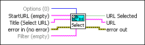

DataSocket Select URL VI
Owning Palette: DataSocket VI and Functions
Requires: Base Development System (Windows)
Displays a dialog box for the user to select a data source and returns the URL to that data.
Use this VI only when you do not know the URL for an object and you want to search for a data source or target from a dialog box.

 Add to the block diagram Add to the block diagram |
 Find on the palette Find on the palette |